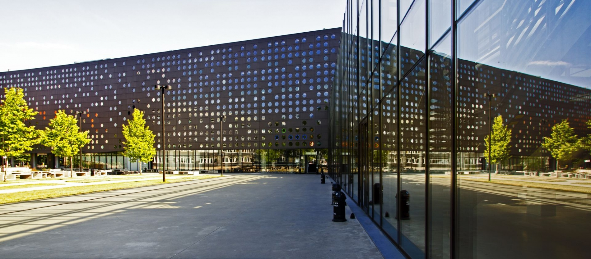

I`m twenty two years old. Currently I`m searching for junior developer
and trainee job offers. I`m interested in
Data Science, Machine Learning and Software Engineering. I posess skills to further develop as
a valuable member of the
team: I`m not afraid to take difficult tasks, I`ve done lots of
different projects in different languages and different technologies
while studying what makes me a really flexible worker and a fast
learner.

For more information about my programming language proficiency and
other skills click the button below
My Programming Interests
In addition to the main fields given above I had also had lots of
interesting experience writing programs
proving statistical statements, creating
cryptographic comunication and even
wrote my own compilator for pseudo-language, that
translates given code to assembler, that can be processed by a vitual
machine. At the course data bases i have learned crucial skills to
become data scientist: MySql. In course of becoming a
Machine Learning specialist I`m also taking the AI course.
To see my chosen projects click the button below
My interests beside programming
Beside programming I have lots of other interests. In my free time I
sing, play guitar, draw and paint. My objective is to become a better
version of myself everyday. I think that constant learning is the key
to live life to the fullest. I like seeing new countries and cities
even for a day or two. That kind of adventure allows to restart the
brain. I also adore playing computer and console games. I like to think
about the gaming mechanics, how and why were they created and implemented.